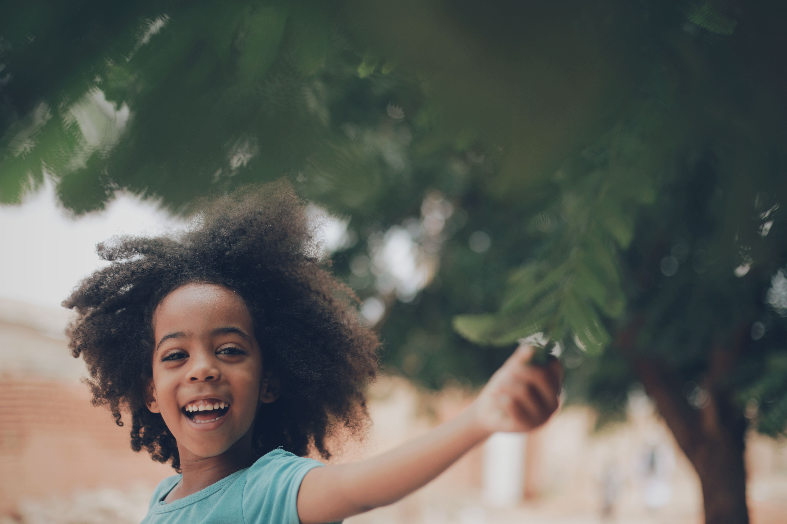
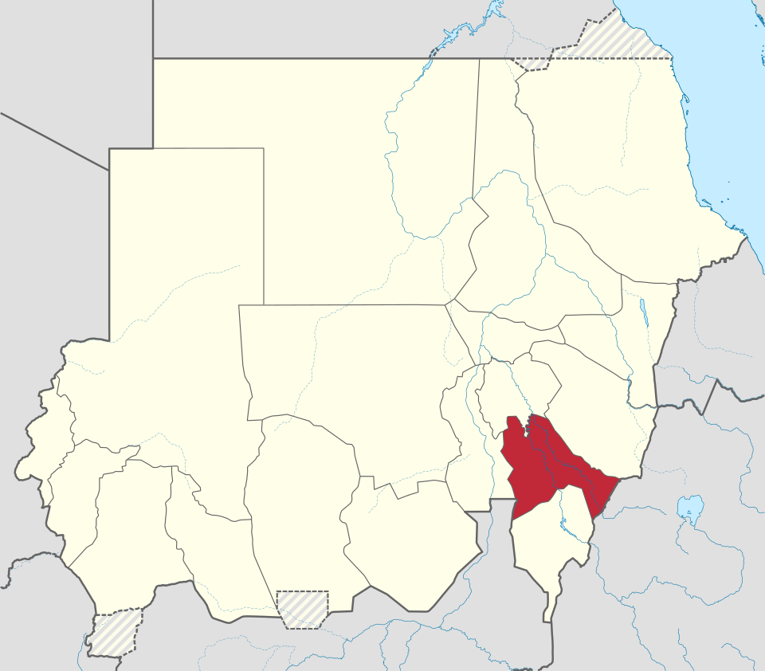

منصة توعوية، بمرجعية قانونية،
ولغة أهل سنار
يهدف البرنامج إلى تعزيز ثقافة حماية الطفل في السودان، ونشر الوعي بحقوق الأطفال، ودعم الأسر والمجتمع بمعلومات موثوقة مستندة إلى قانون الطفل والمعايير المهنية وخبرة المختصين — بما يراعي الظروف الإنسانية والاجتماعية في إقليم النيل الأزرق.
نشر الوعي بحقوق الطفل وواجبات المجتمع تجاهه
التوعية بمخاطر التحرش والعنف والإهمال والاستغلال
معالجة قضايا عمالة الأطفال والتسرب الدراسي
مناقشة أثر النزاعات والنزوح على الأطفال
محاربة العادات الضارة كختان الإناث وزواج القاصرات
تقديم حلول دعم نفسي وعملي متكاملة للأسر


ولاية سنارإقليم النيل الأزرق
كل حلقة تستند إلى نص، لا إلى رأي
يستند البرنامج في مواده وإرشاداته إلى مواثيق دولية وقوانين وطنية راسخة تضمن حقوق حماية الطفولة ورعايتها.
خمس فقرات، ترتيب واحد كل حلقة
الحوار الرئيسي مع الخبراء
نقاش حي ومباشر مع مختصين في علم النفس، الخدمة الاجتماعية، القانون، والإعلام — رعاية شاملة متوافقة مع الأطر المهنية.
لغة بسيطة للأطفال
مواد موجّهة ومبسطة تساعد الأطفال على فهم حقوقهم، وحماية أنفسهم، ومعرفة طرق طلب الأمان والمساعدة بثقة.
الكاميرا المتجولة في سنار
جولات ميدانية في أسواق وأحياء ومؤسسات الولاية، لقياس الوعي المجتمعي الفعلي ورصد التحديات على أرض الواقع.
حالة الحلقة: توعية وعِبرة
عرض حالات إنسانية أو واقعية بالتزام صارم بالخصوصية والسرية والأمان الرقمي، لاستخلاص دروس توعوية للأسر.
تغطية المبادرات والفعاليات
توثيق المبادرات والفعاليات الخاصة بحماية الطفل في الولاية والإقليم، وتسليط الضوء على جهود الأفراد والمؤسسات.
الحلقة الأولى متاحة الآن
أول حلقات البرنامج نُشرت على القناة الرسمية على يوتيوب — انطلاقة أولى نحو موسم كامل من الحلقات التوعوية لأسر ومجتمعات ولاية سنار.
زيارة القناة على يوتيوب
خبرة ميدانية، لا آراء عابرة
يستضيف البرنامج نخبة من الباحثين القانونيين، الأطباء النفسيين، وخبراء الخدمة الاجتماعية، لتقديم حلول علمية قابلة للتطبيق مباشرة داخل المجتمع.
موجّه إلى
نتطلع للتعاون والشراكة مع
لا تفوّت أي حلقة
تابعونا على فيسبوك ويوتيوب لمشاهدة الحلقات أول بأول، أو راسلونا مباشرة على بريدنا الرسمي.